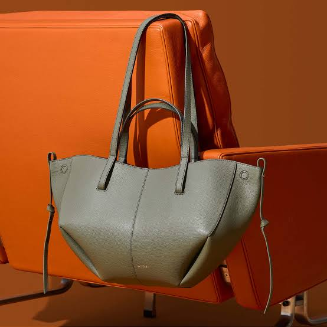
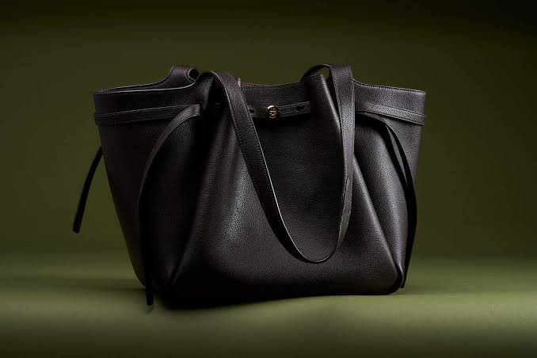
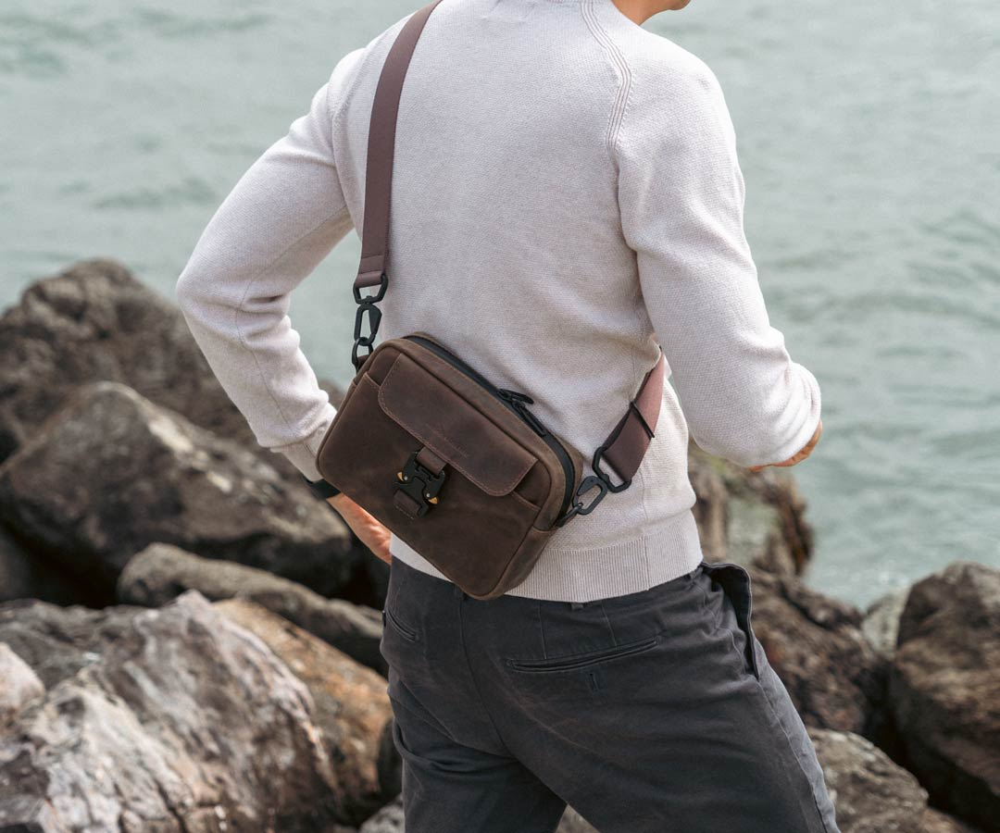
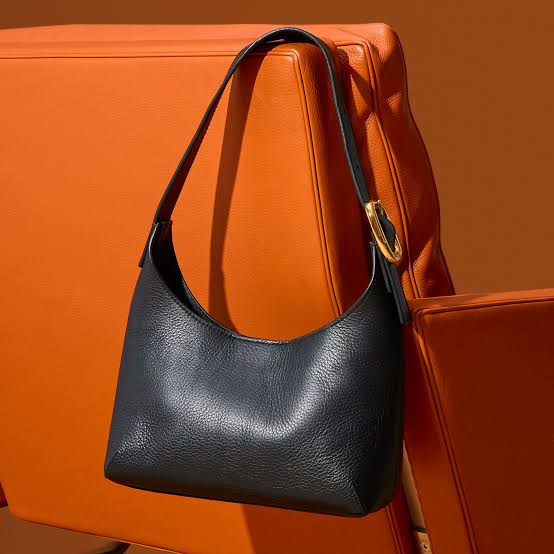
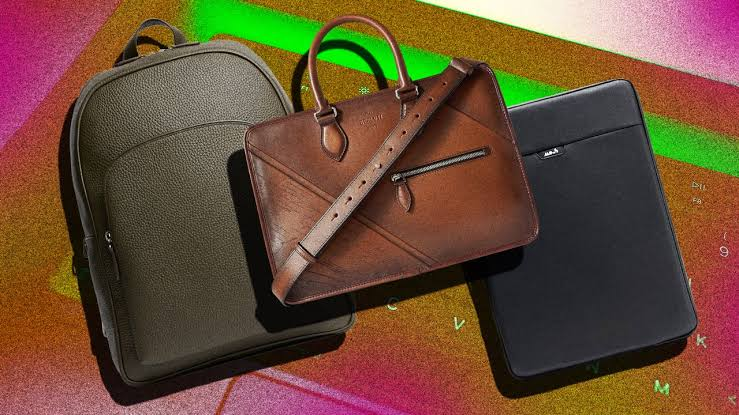
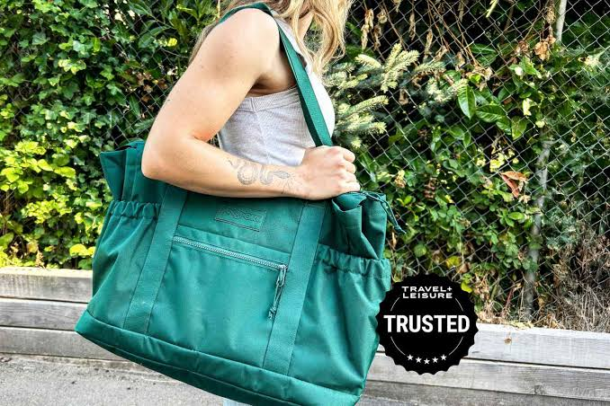
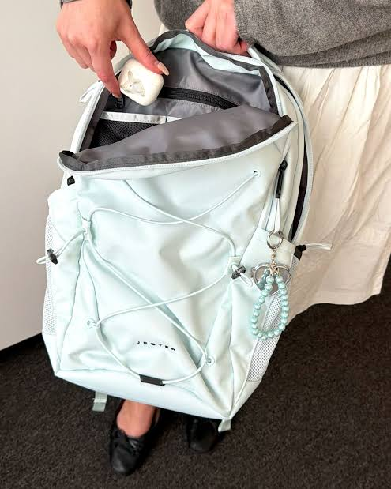

Features a soft pastel-to-light green pebble leather finish with compact styling

Chocolate brown leather bags offer a rich, timeless aesthetic that pairs effortlessly with neutral wardrobe essentials

Small brown leather bags provide an elegant, compact solution for carrying everyday essentials like your phone, cards, and keys while remaining beautifully hands-free
Gray-brown backpacks (often referred to as taupe, charcoal-brown, or espresso-grey) blend earth tones with urban versatility.

Black leather crossbody bags represent the ultimate staple accessory—combining unmatched versatility, security, and effortless style

brown, black, and green leather bags anchor an earth-toned wardrobe.

Whether you are looking for an exact teal/peacock hue (where green and blue naturally fuse)

Cream backpack bags offer a fresh, chic, and sophisticated alternative to traditional dark utility bags